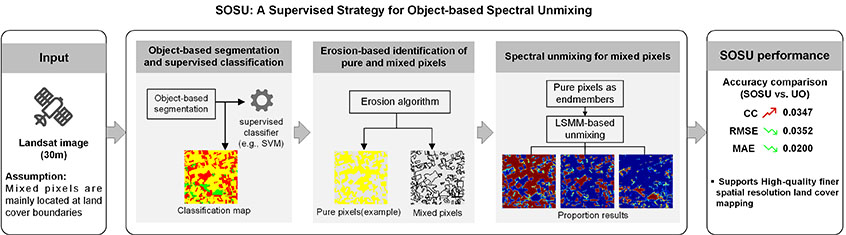
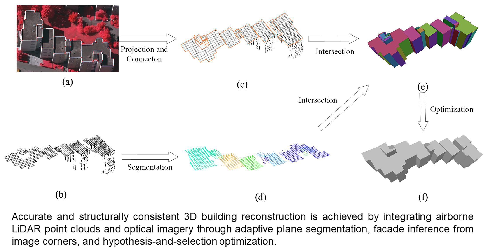
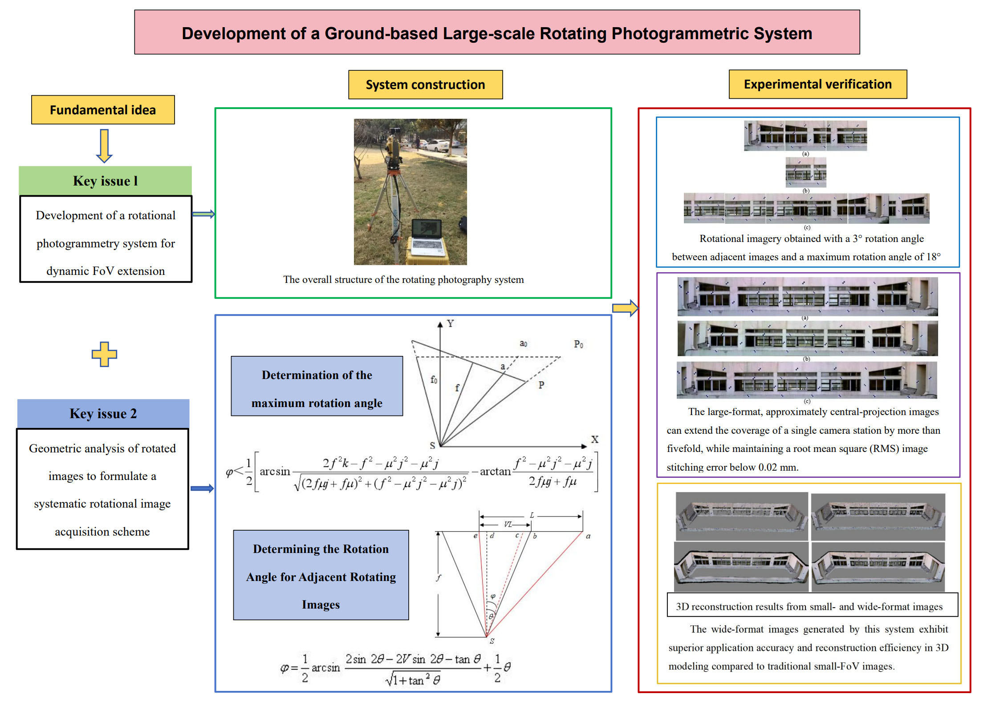
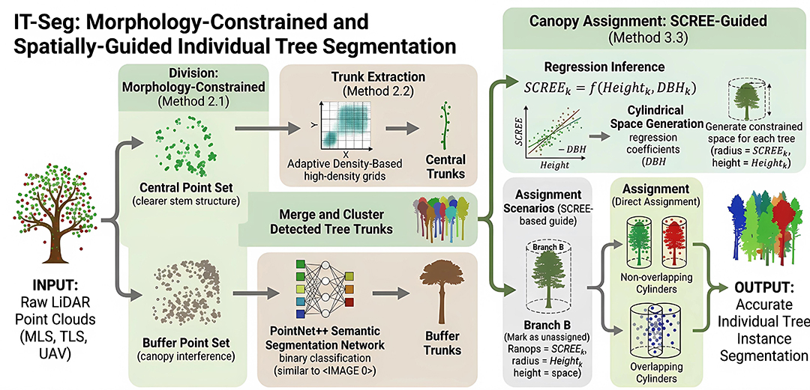
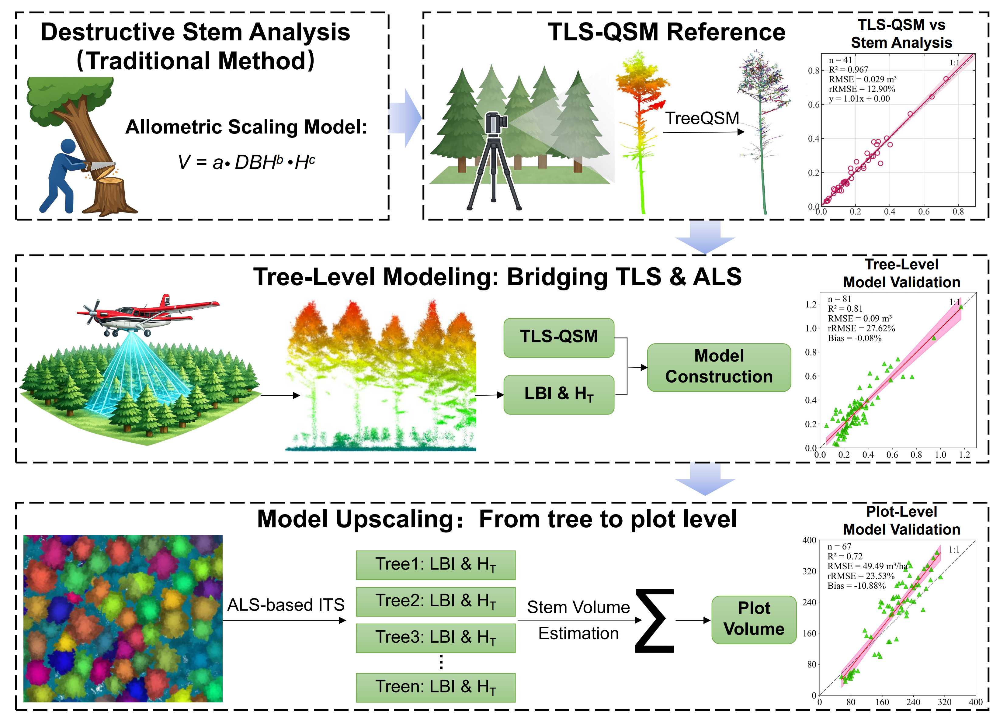
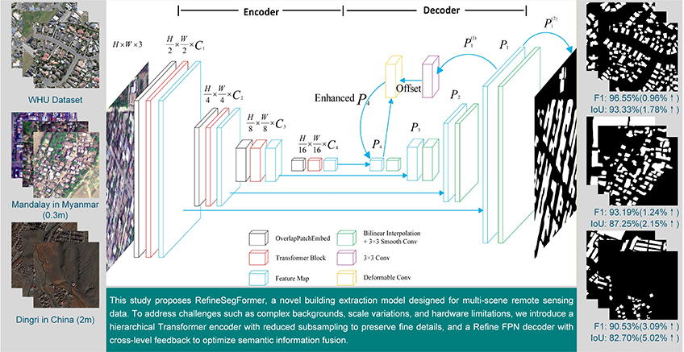

Pages: pp. 959-967
Authors: Ding, Xinyu; Zhang, Chengyuan; Wang, Qunming;
Abstract:
Read more...
Spectral unmixing is a technique to predict the proportions of land cover classes within mixed pixels. The proportions can serve as inputs for land cover classification at finer spatial resolutions (i.e., by subpixel mapping [SPM]). To achieve high-quality finer spatial resolution land cover mapping, during the spectral unmixing process, it is necessary to accurately identify land cover boundaries, which are typically represented by mixed pixels. The recently proposed unsupervised object-based subpixel mapping model (UO-SPM) incorporates object-level information into spectral unmixing. However, its performance is limited by uncertainties in unsupervised clustering and the automatic threshold segmentation. In this paper, we proposed a supervised strategy for object-based spectral unmixing (SOSU). SOSU segments observed images (i.e., Landsat images in this paper) into objects and uses supervised classifier to produce object-level classification maps. Mixed (i.e., located at object boundaries) and pure pixels (i.e., within object) are subsequently identified using an erosion algorithm applied to the classification maps. The identified mixed pixels are unmixed using the extracted pure pixels as endmembers. The SOSU method not only inherits the advantage of UO-SPM but also exploits supervised and object-based spatial information to achieve more reliable segmentation and unmixing. The effectiveness of SOSU was validated across seven different experimental regions. By introducing supervised information, SOSU increases the correlation coefficient by 0.0347 and reduces the root mean square error and mean absolute error by 0.0352 and 0.0200, respectively, compared with UO (i.e., the spectral unmixing component of UO-SPM).

Pages: pp. 969-980
Authors: Wang, Xiangfei; Xu, Bo; Li, Xin
Abstract:
Read more...
The application of three-dimensional (3D) building models has expanded rapidly in recent years. Airborne lidar point clouds and optical images are two primary data sources for building reconstruction and provide complementary geometric and radiometric information. However, reliable 3D building reconstruction from the integration of both modalities remains challenging due to noise and occlusions in the data. To address these issues, this paper proposes a hypothesis-and-selection???based building reconstruction method that integrates airborne lidar point clouds with optical images using manually annotated image corner points. Roof structures are robustly extracted by an adaptive region-growing plane segmentation framework with iterative voting, which reduces undersegmentation near plane boundaries. The annotated image corners are then back-projected into object space. Facade positions are inferred according to their geometric relationships with the edge points of the point cloud. Finally, a compact and watertight polyhedral model is obtained by solving a binary linear programming problem. Bayesian optimization is introduced to automatically adjust the weights of energy terms and improve reconstruction stability. Experiments conducted on the public International Society for Photogrammetry and Remote Sensing Vaihingen and Toronto data sets demonstrate that the proposed method robustly produces geometrically accurate and structurally complete building models. Compared with existing methods, it achieves a better balance between geometric accuracy and model simplicity.

Pages: pp. 981-988
Authors: Li, Chunmei; Sun, Jiuyun;
Abstract:
Read more...
To address the limited field of view (FoV) of digital cameras in close-range photogrammetry, this study develops a novel, ground-based large-scale rotating photogrammetric system by integrating engineering surveying principles with photogrammetric theory. Results demonstrate that the approximate central projection images generated by this system can expand the coverage of a single camera station by more than five times while maintaining a root-mean square image stitching error less than 0.02 mm. The wide-format images generated by this system exhibit superior application accuracy and reconstruction efficiency in three-dimensional modeling compared with traditional small FoV images. The system reduces the root-mean-square error of control points and check points by 0.165 mm and 0.424 mm, respectively, while also significantly shortening the total reconstruction time. The proposed rotating photography system effectively mitigates the limited FoV of digital cameras and provides a novel technical solution for large-scale ground close-range photogrammetry. The systematic methodology for rotary image acquisition established in this work lays a theoretical and technical foundation for the practical engineering application of such systems.

Research Articles Open Access
Pages: pp. 989-1000
Authors: Chen, Maolin; Yin, Hanwen; Zhang, Zhiqing; Zhang, Huan; Bo, Liming;
Abstract:
Read more...
Individual trees are essential components of forest ecosystems, and accurate tree-level segmentation provides a crucial foundation for forest ecosystem modeling and biodiversity assessment. We propose a novel point cloud-based individual tree segmentation method guided by morphological prior constraints and single-tree canopy radiative effective extent (SCREE), a metric used to define the canopy boundary for each tree, computed from high-dimensional features output by a network. First, the original point cloud is divided into a central point set and a buffer point set based on morphological prior constraints. On this basis, different strategies are applied for trunk extraction from the central and buffer points: trunks in the central point set are extracted through adaptive density-based filtering, while trunks in the buffer point set are extracted using a semantic segmentation network. Finally, canopy points are assigned to individual trunks to obtain complete tree structures. This assignment is guided by the proposed SCREE, inferred using a diameter at breast height–height generative model to generate a constrained space. Validated on six forest scenes from three public data sets, the proposed method achieves an average instance-level accuracy of 84.71% and an average point-level accuracy of 81.85%, demonstrating strong robustness across diverse forest environments. Moreover, compared with existing methods, our method exhibits higher stability when handling variations in samples and the presence of small trees across different types of scanners.

Pages: pp. 1001-1012
Authors: Gu, Denuo; Pang, Yong; Du, Liming; Kong, Dan;
Abstract:
Read more...
Accurate stem volume estimation remains contingent on an analytical tree (i.e., tree felled and sectionally measured to obtain reference stem volume) as the calibration benchmark for remote sensing and allometric equation, thereby limiting scalability and operational efficiency in large-scale forest carbon assessment. To overcome this bottleneck, we propose a hierarchical integration framework for multi-source lidar-based stem volume estimation, termed “hierarchical integration of volume estimation” (HIVE), which establishes a lidar-driven estimation chain linking individual trees to plot-level assessments. Specifically, we first establish a volumetric benchmark from terrestrial laser scanning (TLS) by reconstructing stems with the quantitative structure model (QSM), which serves as a surrogate for analytical trees. We then transfer this benchmark to airborne laser scanning (ALS) by mapping the lidar biomass index (LBI) and tree height to TLS-derived reference volume, effectively coupling nondestructive TLS-based volumetric calibration with broad spatial coverage. Cross-scale calibration and validation then enforce tree-plot consistency, enabling accurate upscaling without reliance on traditional field calibration based on the manual diameter at breast height and tree height measurements. For 41 Japanese larch (Larix kaempferi) trees, TLS-based TreeQSM yielded stem volume estimates consistent with analytical-tree measurements (R2 = 0.97, relative root mean square error [rRMSE] = 12.90%) and outperformed traditional allometric equations (R2 = 0.96, rRMSE = 14.34%). Furthermore, using k-fold cross-validation on 81 TLS-ALS paired trees, the tree-level LBI model showed consistent predictive performance (R2 = 0.81, rRMSE = 27.62%). When transferred to the plot level, stem volume estimates across 67 plots agreed well with field survey references (R2 = 0.72, rRMSE = 23.53%). This approach provides an innovative solution for efficient large-scale forest volume estimation by substantially reducing reliance on traditional field surveys for model calibration and opens new possibilities for carbon stock assessment and sustainable forest management.

Pages: pp. 1013-1022
Authors: Yang, Gangyu; Zhai, Wei; Li, Jincheng; Cao, Yingying
Abstract:
Read more...
The extraction of building footprints based on high-resolution remote sensing images is widely used in many fields such as land survey and urban planning, and high resolution also brings complex background information. In order to improve the effectiveness of building footprint extraction, this paper proposes a RefineSegFormer that combines a hierarchical transformer encoder and a cross-level feedback Refine feature pyramid network implemented through deformable convolution. RefineSegFormer achieved an F1 score of 96.55% and an IoU of 93.33% on the widely recognized WHU building data set, an F1 of 93.19% and an IoU of 87.25% on the 0.3-m Mandalay City data set, and an F1 of 90.53% and an IoU of 82.70% on 2-m Dingri County data set, all of which achieved the best results, proving the effectiveness and practical application value of the proposed model in this paper. The improved lightweight model for building footprint extraction has better performance than the unimproved medium model. In submeter remote sensing image building footprint extraction, the parameters are only 20% of the medium model, which can achieve more than 98% of the performance of the improved medium model, balancing extraction accuracy and inference speed. In the extraction of building footprints from meter remote sensing images with a small number of buildings and high similarity between buildings and the background, it is more recommended to use the improved medium model. Compared with the unimproved medium model, F1 has increased by 6.71%, and IoU has increased by 10.55%. The model and code of RefineSegFormer can be available at: https://github.com/amanforinteresting/RefineSegFormer.
